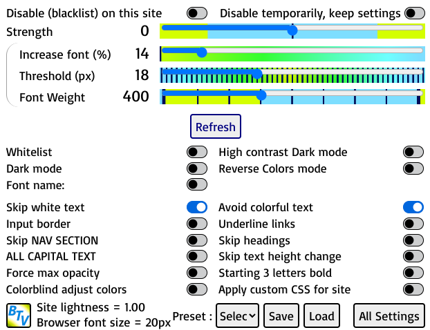

How to use Better Text View
- The button in the browser address bar manages the options for the current page. If it is not visible, you need to click on "Extensions" icon and "Pin" the Better Text View plugin to the toolbar.
NEW CHANGES
- Proportionate text increase re-introduced for 'normal' / proportional text size increase.
- In Dark mode, if both "Underline links" and "Input border" are enabled, brightness and contrast apply to more elements and images (but distort colors of some images).
- Lightness value shown in popup settings.
- If strength is an ODD number, input textbox color is changed to black/white depending on its color.
- In Reverse colors the brightness and contrast sliders control brightness and contrast of text and background color.
- Color shades of text (and backgrounds somewhat) can be made similar to original website by enabling "Reverse colors hue correction".
- "Skip text height changes" avoids changing font heights of text and INPUT elements like text boxes and select boxes.
- New option to add custom CSS rules to the site
- If either of "Dark mode" or "Reverse Colors" is enabled in global options, all websites colors are changed to "dark theme" colors. If the theme calculates "Lightness" wrong, then enable both "Reverse colors" and "Dark mode" to override the wrongly computed theme.
- "Underline black links / Sans Font" & "Input border / Serif Font" change all fonts to Sans-Serif & Serif independantly.
- "Reverse Colors" & "Invert Image colors" correctly displays most emojis, but speed is slow.
- Starting 3 letters bold and ALL CAPITAL TEXT work with NON-ENGLISH languages also.
- IMPORTANT: When the settings of "Font increase %" and "Font Threshold" are VERY HIGH, to make text appear MUCH BIGGER, the browser's "Text Size" Setting SHOULD ALSO BE CHANGED TO "LARGE/VERY LARGE" or "16 px to 24 px". Otherwise on some pages OVERLAPPING/CUTTING of text MAY occur.
- DO NOT ENABLE BOTH "Dark Mode" and "Force Reverse Colors". This condition is not considered and there will be problems in results.
- VERY IMPORTANT WARNING: If you are COPY+PASTE-ing from a page which has been changed by this plugin, DISABLE the plugin for that webpage and THEN copy + paste. Otherwise a lot of styling changes will also get pasted which is not on the original webpage.
- As warned below, if you are using HTML Editors in software like Wordpress or similar, disable the plugin for that website to prevent styling changes from being entered in the HTML editor.
- ALSO IF YOU TAKE A PRINTOUT OF WEBPAGE changed by this extension, IT MAY NOT PRINT CORRECTLY. SO KEEP THE "Disable for this site" option ENABLED when PRINTING.
- DISABLE PLUGIN = Select "Disable Better Text View for this site" option on Options menu or DISABLE "Activate on all websites" in All Settings page, whichever is preferred.
ABOUT EXTENSION
TL;DR
- Font size within threshold is enlarged inversely with font size. That means small text made bigger than large text.
- If 'normal' zoom-style text size increase is wanted, enable 'Proportional text size'.
- "Strength" slider greater than 200 makes most text all black / white on light / black background, while large negative values keeps original colors.
- Font Weight slider changes thin/bold-ness of ALL text, and bold and normal letters weight when "Start 3 letters bold" is enabled.
- ALL CAPITAL TEXT & Starting 3 letters made bold options.
- Change Font style of ALL Fonts of page to Sans-serif or Serif, by enabling "Underline black links / Sans Font" or "Input border / Serif font".
- Dark mode changes Contrast and Brightness of "black" themed sites. Pictures are kept normal but if "Underline links" and "Input border" are enabled, the brightness / contrast effect is greater and images get distorted colors.
- "Force Reverse Colors" is a color inverter, making white background black, and black bg. white, while images are normal (unless "Invert Image colors" is disabled, which will also reverse image colors).
- In Reverse colors the text brightness and contrast can be changed by their sliders.
- The popup options show the "Lightness" value of current site. If less than 0.5, then it is "Dark themed", if more than 0.5, it is "Light themed". Dark themed sites can be changed by "Dark mode" while "Light themed" sites can be changed by "Reverse Colors".
- Enable "Skip text height change" to skip changing text heights and input elements heights.
- Enable "Skip text height change" to skip changing text heights and input elements heights.
- Enabling "Apply custom CSS for site" will allow you to enter custom CSS rules for the site
DETAILS
- The text size is increased inversely depending on its size. This means small sized text is made much bigger than larger text, which is slightly increased in size. All text within size of Threshold setting is increased in size with text closer to Font Threshold size increasing less than text much lower size than Threshold, depending of Font Increae % setting.
- 'Proportional text size' enabled increases font size in proportion to its size and Font Increase % and below Threshold. It does NOT apply inverse size increase of font which is default.
- If "Activate on all websites" option is disabled only "whitelisted" sites are changed, else ALL sites get processed.
- Frames inside of site are also processed, but their settings are of the origin site of the frame, which MAY NOT be the site displayed in address box.
- Brightness Slider controls the brightness of text/background with 0 to 300% range for "Dark mode" and -300 to 300 for "Reverse colors".
- The colors of text are changed for maximum contrast depending on value of "Strength" slider (unless "Avoid colorful text" is selected which skips "colorful" text, and if "Skip white text" option is enabled, which skips WHITE text). If greater than 200, text colors change for maximum contrast.
- By increasing "Strength" setting to above 200, the text can be made black on light background or white on black background (if dark mode is enabled) depending on brightness of background color ("Avoid colorful text" and "Skip white text" is ignored).
- Decreasing "Strength" setting to negative values like -120 or -250 can restore the original text colors of website instead of high contrast black / white text.
- If Strength is ODD value, and there are INPUT text boxes on site, the input text will be made black / white depending on color.
- The "Font Weight" slider can be changed to lowest 100 (very thin) upto 900 (very thick/bold) text. This is useful for adjusting sites having very thin text or very bold and thick text. When "Start 3 letters bold" is enabled, (slider value + 400) is taken as weight of bold letters and noramal text has weight of (slider value) if slider is less than 500. For slider above 400, the slider value is taken as weight of 3 letters and all other text is normal.
- ALL CAPITAL TEXT option makes all webpage text in capitals. It ALSO works on NON-ENGLISH languages.
- Starting 3 letters bold option makes all words first 3 letters bold and also works for NON-ENGLISH languages. If there are problems with some links or menus not working, enable "Skip links in 3 letters bold" option to avoid making links bold.
- The "Dark Mode" option is for black themes and, when enabled, allows increasing of Brightness (by the "Brightness" slider, range 0 to 300) and Contrast (by the "Contrast" slider, range 0 to 300) of text and background colors.
- A "Force Reverse Colors" option allows site to "Reverse" colors, so that a light site becomes black. It is useful for changing colors of sites to "Dark Theme" or "Dark Reader" view while preserving (most of) images' colors. In case a webpage does not have its background color reversed, enabling "Force max opacity" will force a reversal of the background color.
- The "Invert Image Colors" option, which appears when "Force Reverse Colors" is enabled, causes images and videos colors to be inverted, so due to double inversion images and videos become normal. If it is disabled, the images and videos are not doubly inverted in color, causing them to look "reverse color".
- Reverse color hue correction changes colors to match original website in reverse colors..
- The text brightness and contrast can be changed by the sliders when "Reverse colors" is enabled. To revert to original brightness and contrast, set Strength to 0 and Contrast to 50.
- The popup options box show the "Lightness" value of current site. If less than 0.5, then it is considered "Dark themed", if more than 0.5, it is "Light themed". Dark themed site colors can be changed by "Dark mode" while "Light themed" site colors can be changed through "Reverse Colors". Some few sites may detect theme wrong, then enable BOTH Dark mode and Reverse colors to force site color changes.
- If "Underline black links / Sans Font" or "Input border / Serif Font" is enabled, ALL Fonts styles are changed to Sans-serif or Serif. If BOTH are enabled in Dark mode, then brightness and contrast are applied to more elements and images (which can distort colors of some images).
- The menu and large sections of webpage are increased in size according to the Font Increase % and Input elements increased by Font Threshold. If there are problems in display of menus / header imaages or large tables overlap, enable "Skip NAV & SECTION" checkbox. The "Skip NAV & SECTION" also skips applying Reverse Color to images inside NAV and HEADER elements, which are (usually) on top menu of webpage, when "Force Reverse colors" is enabled.
- "Skip text height changes" will not change heights of text, and INPUT elements like text and select boxes.
- Enabling "Apply custom CSS for site" will allow you to enter custom CSS rules for the site
- Additional features are input box borders, underlining of links, forcing maximum opacity of transparent elements and saving/loading of settings whitelists/blacklists,
- This extension is helpful for people who require reading glasses / spectacles due to far-sight / long-sight / hypermetropia / hyperopia condition of eyes.
- VERY IMPORTANT WARNING: If you are COPY+PASTE-ing from a page which has been changed by this plugin, DISABLE the plugin for that webpage and THEN copy + paste. If you are editing or submitting HTML content online using a content management system like Wordpress or having an HTML Editor, DISABLE this extension for that particular site. Otherwise, the HTML will contain unwanted styling elements generated by the extension.
- WHEM PRINTING A WEBPAGE modified by this extension, KEEP "Disable for this site" enabled otherwise the PRINTING WON'T BE CORRECT.
SUGGESTIONS OR ISSUES
- If you have any bugs other than known "can't fix", or suggestions, post them on https://codeberg.org/sameerw/btv/
- THE SOFTWARE IS PROVIDED "AS IS", WITHOUT WARRANTY OF ANY KIND, EXPRESS OR IMPLIED, INCLUDING BUT NOT LIMITED TO THE WARRANTIES OF MERCHANTABILITY, FITNESS FOR A PARTICULAR PURPOSE AND NONINFRINGEMENT. IN NO EVENT SHALL THE AUTHORS OR COPYRIGHT HOLDERS BE LIABLE FOR ANY CLAIM, DAMAGES OR OTHER LIABILITY, WHETHER IN AN ACTION OF CONTRACT, TORT OR OTHERWISE, ARISING FROM, OUT OF OR IN CONNECTION WITH THE SOFTWARE OR THE USE OR OTHER DEALINGS IN THE SOFTWARE.
Options guide
Clicking on the options button will open this window:

- Disable on this website: Adds the website to the blacklist.The contents of this site will not be changed.
Default value: disabled
- Strength: Adjusts the application of black/white color. This value can be adjusted to preserve website's original colors or to make it higher contrast. In Dark mode or Reverse colors, this deteermines "brightness" of text / background. If it is an ODD number, INPUT text boxes color is changed to black/white for maximum contrast.
Default value: 0
- Increase font (%) / Threshold (px): Enlarges fonts that are below the threshold (in pixels).
Default value: 14% / 18 px.
- Font Weight Changes bold setting of fonts from 100 (thinnest) to 900 (boldest) 400 is normal.
Default value: 400
- Contrast % Determines the contrast percentage of text in Dark mode and Reverse Colors.
e.g. 50 equals normal contrast in Dark mode and Reverse Colors.
Default value: 50
- Brightness % Determines the brightness percentage of text/background in Dark mode and Reverse Colors.
e.g. 0 equals normal brightness in Dark mode and Reverse Colors.
Default value: 0
- Whitelist: Adds the website to the whitelist. This site will have custom settings different from preset settings.
Default value: disabled
- Dark mode: Should be enabled on "Black theme" or black background/light text websites. The Brightness and Contrast % can then be adjusted with the Contrast slider and Strenth slider which works as Brightness setting.
Default value: disabled
- Avoid colorful text: Attempts to avoid colorful text and links, if they are considered readable.
Default value: enabled
- Underline black links / Sans Font: Adds an underline to black colored links, to distinguish them from other text. Also changes all Fonts style to Sans-Serif.
Default value: disabled
- Force Reverse Color: Reverses colors of a site, so a light background site becomes black and black background site becomes bright, Text colors are also reversed. Images are unchanged as much as possible.
Default value: disabled
- Invert Image colors: Does not apply reverse colors to images, causing images to appear in reverse colors.
Default value: enabled
- Reverse colors hue correction: Changes text colors to match those of website.
It is enabled when Reverse colors gets enabled. Default value: enabled
- Input border / Serif Font: Attempts to add a black outline around text areas. Also changes all Font Styles to Serif font.
Default value: disabled
- Force max opacity: Forces full opacity on all fonts. Also changes background color if "Force Reverse Colors" is applied.
Default value: disabled
- Skip headings: Avoids applying on head tags H1 to H4.
Default value: disabled
- Skip NAV & SECTION: Avoids changing size of NAV and SECTION elements (usually menus and large tables) and height change of INPUT elements.
Also skips applying reverse colors to title menu images of a page.
Default value: disabled
- Skip text height changes: Avoids changing size text whose height is less than font size and INPUT elements like text and select boxes
Default value: disabled.
- Skip white text: Avoids applying on white text.
Default value: enabled
- ALL CAPITALS TEXT: Makes all text in CAPITALS.
Default value: disabled
- Starting 3 letters bold: Starting 3 letters of words are made bold.
Default value: disabled
- Skip links in 3 letters bold: Avoids changing links when start 3 letters bold is enabled.
Default value: disabled
- Apply custom CSS for siteLets you enter custom CSS rules for the site.
Default value: disabled
- Proportional text sizeIncrease font size 'normal' proportionally, like zooming.
Default value: disabled
- All Settings Opens a tab with all the options, including the ability to activate the add-on everywhere, the global options (with in-depth tooltips), the whitelist/blacklist, and a link to this page.
- The calculated website background colors are used to determine if site has "Light" theme (lightness greater than 0.5) or "Dark theme" (lightness less than 0.5).
On some sites this calculation may result in wrong theme choice (light website calculated as "dark" theme or reverse).
If this happens, override this value by setting both "Dark mode" and "Reverse Colors" to enabled.( This only applies if you want to keep a "Dark" mode or "Reverse colors" on the site)